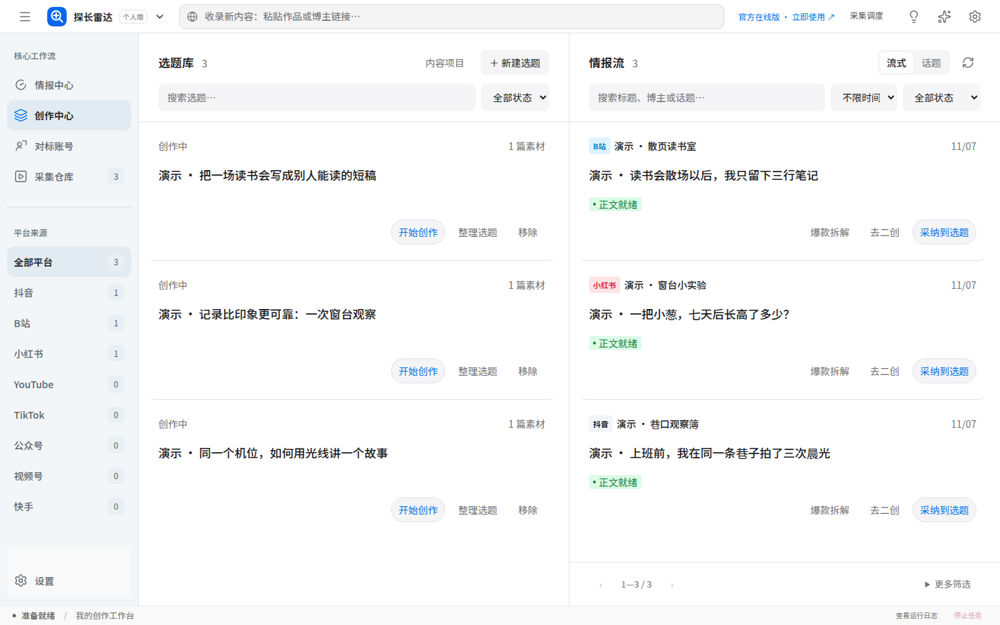

把收集、研究和创作，放进一个工作台。
面向内容创作者，将素材、对标研究、选题和稿件连在一起。用自己的工作区持续积累，也可以直接选择由元探长维护的官方在线服务。
个人版
在自己的电脑运行，默认免登录，数据保存在本机。四个核心模块、编辑器与可点击案例一起提供。
打开本机个人版 先安装 Node.js、pnpm，并按 README 初始化与启动。本页用于选择入口。官方在线版
直接进入元探长网站，由官方维护运行环境和在线服务，使用网站账号开始创作。
立即使用官方在线版 ↗ 线上账号、数据与本机实例独立；服务范围和使用条件以官网为准。让收集的内容，接得上下一篇稿件。
在同一个工作台保留来源、对标、选题和写作关系，减少来回翻找素材。

- 情报中心查看已有素材的概览和来源分布，找到值得继续研究的内容。
- 创作中心把素材关联到选题和稿件，边参考原文、已有拆解和笔记，边编辑正文。
- 对标中心整理博主资料、平台身份和关联作品，让后续研究保留上下文。
- 采集库收录原文与本地文件，检索、筛选、做笔记，也能连接自己运行的采集程序。
从服务器版，到你自己的工作台。
元探长原版面向服务器部署与在线运营。我们将开发过程中积累的四个核心模块，整理为适合本机运行的个人版，开放其前端、后端、数据结构、演示案例与开发文档，方便你直接使用，也方便按自己的需求继续修改。
个人版已经适配 SQLite 与本地任务，不要求另装 PostgreSQL、Redis 或 Docker。按 README 启动后，可以管理内容和编辑稿件；需要自动抓取、生成或转写时，再接入自己的程序或处理服务。
查看开源范围与服务边界
- 四个模块的页面、子页面、编辑与绑定入口，以及本仓库对应的个人业务代码和本地存储一并开放。
- 官方商业运营账号管理体系、付费接口及其接入实现由线上版单独维护，不包含在这个个人版中。第三方服务的使用权限、账号凭据和官方持续运行资源不随源码包提供。
- 通用本机采集接入口已经提供；具体平台抓取程序及其定时运行由使用者自行实现和启动。演示内容不代表实际平台采集结果。
- 项目自有代码采用标准 MIT，允许修改、分发和商用，分发时保留版权声明与许可文本。